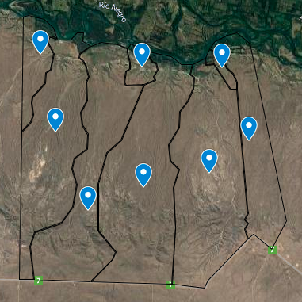

Located in a beautiful natural environment, with native forests and native flora, which invites you to live in the wild landscape. In Mainque, on the Rio Negro, Patagonia, Argentina.
Vosqe Soluna is a project in a field of 10,000 hectares near the town of Mainque, department of General Roca, province of Rio Negro, with a river coast and land on the steppe and desert. We are in our initial stage, convening investors, people and organizations interested in building a sustainable, fair, ecological and healthy reality. The project is to found an avant-garde eco-sustainable town, with advanced organic and biodynamic agroecological production, regenerating soils with CO2 recapture, offering top quality and healthy food with education and comprehensive health. We are strongly committed to the environment, which is why it is essential to generate new ways of living in society and to produce clean and renewable energy. Solar panels and other clean forms of power generation will be installed. We will promote the movement of people from the big city to rural areas by offering new real estate developments that take care of the environment, promoting sustainability in all areas, value chains in micro-regions, education and comprehensive health.
The mission is to strengthen the development of small neighboring towns through decent work, agroecological production, and the development of healthy technologies for people, the environment and socially responsible. We will promote soil regeneration using cutting-edge technology and renewable energy in production (windmills, solar and hydraulic pumps, and ponds), developing new ecological strategies in irrigation, weed management, pests, and fertilization. We will develop an ecological commune with sustainable housing (low-impact materials) and innovative systems for caring for the environment at the energy level, waste collection and recycling, waste management and use of water resources. In the social aspect, decent and autonomous work and housing will be promoted with a new concept of town, where people who share a common interest in lifestyle, social and environmental responsibility coexist with diverse areas of expertise to develop the area. It will allow low-income families to access their own land, forming part of a cooperative. This model admits that each person can contribute what they have: knowledge, financing, workforce or profession, equalizing opportunities and favoring interdisciplinary and horizontal work. A bridge will be built linking the commune of Mainque and route 22 with the area, favoring the productive growth of the fence, facilitating transportation for the inhabitants with even greater regional development, favoring the migration of people and sustainable productive development in this region. depopulated.
The economic model is carried out prioritizing the welfare of the worker, their growth and development, favoring identification with the project and rooting in the region. There are 4,000 hectares allocated for organic agricultural production of fruit trees, nuts, olive trees, vineyards, vegetables, seeds and cereals, with more than 40 different varieties. Sowing agriculture will be complemented by the planting of fruit trees, nuts and medicinal herbs, generating economic, environmental and social sustainability. The project includes the production of a wide variety of organic, vegan and vegetarian processed products. They have been designed based on our knowledge of the market, the needs of consumers, together with the culture of each country of destination. Two industrial plants are proposed for the production of processed foods and organic beverages, in accordance with the growing global demand for healthy products. One third of the organic agricultural inputs needed for the production of food and beverages will be developed and produced by the project itself. The other two thirds will be independent producers in the region, favoring the development of small regional economies. Its commercialization will be to satisfy the demand of consumers in Latin America and the Asian continent. By opting for the use of renewable energy, the variable costs of irrigation are eliminated, which usually involves a great risk and in turn generates greater profitability. Finally, the sale of lots financed for 30 years will be an additional contribution to the financing of the project, ensuring the profitability of the land for a sustained period over time.
A school and a comprehensive health center will be built that will provide quality services (in a place where they do not exist), favoring integration, generating training and an additional source of income. Finally, some 400 hectares will be developed for the sale of lots, in which ecological housing will be offered in a natural context, promoting the migration of professionals from the city to rural areas, promoting teleworking and improving connectivity, with the development of new green cities integrated in community life.
Land: You can choose your plot from 5000 square meters with planting of fruit trees and nuts, on the black river, in the valley, in the forest, or on the fence. We offer farms on the river, valley farms, vosqe farms and edible desert vosqe farms to plant, with renewable energy through solar pumps, windmills, hydraulic power and dams. Farms of at least 5000 square meters and a community action with access to communal spaces. 5% of the vosqe is a nature reserve for common uses.
Bioconstruction: I built your house with materials with low environmental and ecological impact.
Common spaces: We have common spaces and biological corridors on the river.
Your garden: You can produce your own food, receive boxes of organic food or receive rent from your land.
Permaculture and agro ecology: We advise you on biodynamic and organic practices so that you can achieve food sustainability and can train yourself to build an ecological home. We provide you with seeds for your garden and biodynamic preparations that strengthen the quality of the compost, to provide them with vital forces so that production reaches maximum vitality, which is reflected in its nutritional power, flavor, color, aroma and conservation. Restaurant + natural store: Enjoy the richest and healthiest meals, with organic and bio-dynamic foods from our garden.
Waldorf School & Camps: We are developing a Waldorf school. His pedagogy is based on a conception of the human being based on the search for a free human being.
Comprehensive Vacations & Nature Activities: Shared rooms to spend the summer cultivating the land and learning about biodynamic agriculture, trekking trails, kayak circuits and beaches.
Calendar of Practices & Seminars: We are building a room for yoga, meditation, dance and other daily practices. Join us in putting together the annual calendar, building community & new culture.